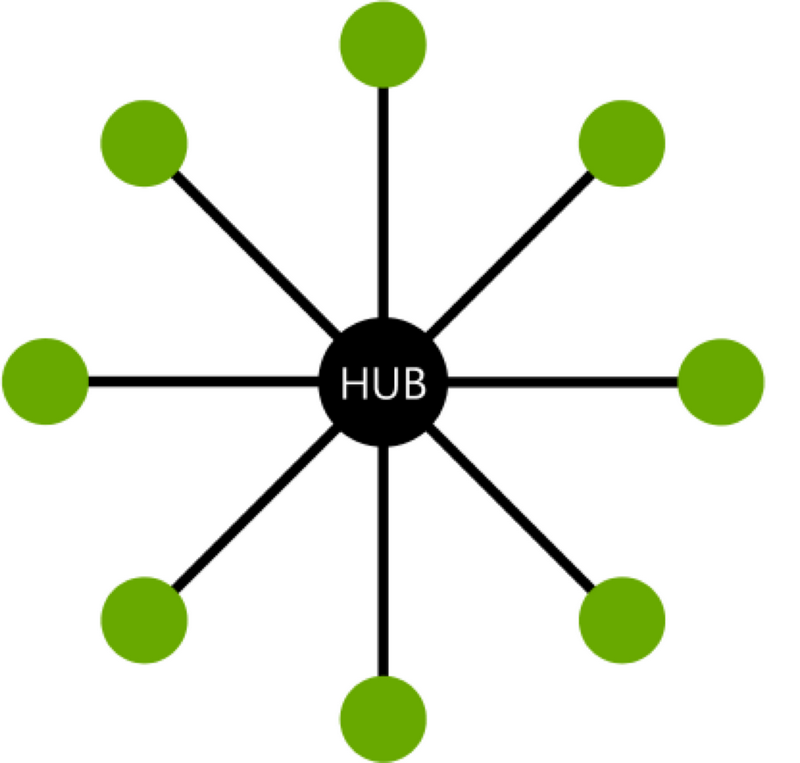

What's All This About Text Editors?
I always used to ask, why do people post about their text-editors? These days I know the reason. Computers are lightening fast, using them isn't. You need to leave what you are doing to turn on another piece of software. You have to search for files. You're constantly having to remember how a process works, or search around the IDE to figure out how to do something again. Mastering a text editor empowers the user to do things efficiently. It puts him or her in a position to confidently and competently multitask.
What Editor Should I Use?
Most modern text editors are cool and easy to use. Some are better than others. Some are free. The most popular ones, Sublime, Atom, Coda, Vim, are vastly extensible. For command line action a simple one like Pico, or Nano will do. When I want to use an editor in addition to Emacs I use Notepad++, Pico, and/or Atom, in order of frequency. I've heard products from Jetbrains are wicked cool, especially IntelliJ. If I had the time to learn a new editor I would probably pick up Webstorm.
Okay, Why Emacs?
Text editors are in the same family. You will always have to learn shortcuts. You will always have to figure out how to use them. You will always have to find and update packages. Some of those packages will always conflict, fall out of maintenance, or go obsolete. They're all the same and they all come from Emacs. Emacs isn't popular because doing those things can be complex. You have to configure the code, and that means going under the hood. Under there you'll find elisp, which has other uses. No, really, it does. The advantage of Emacs is that once you learn how to use it you can do more than you can with any other editor. A lot more. It also has a feel to it that is hard to beat. You're running everything from a clean text file. If you can get to the simplicity on the other side of complexity it's amazingly clean.
How I Use Emacs With An Interface
Modern editors are great mostly because of their IDEs, which make them easier to use. You don't have to remember 400 hundred functions, only the buttons that call them. Wordprocessers group tasks so you only have to remember which area to go to then you will be reminded not only how to do what you want but also what other things you can do there. That's a big issue with Emacs, remembering what you need to do (other issues include using the control key, which you may want to rebind to CAPSLOCK).
I use two packages to generate popup interfaces that enable me not only to group tasks, but also to call functions, without remembering shortcuts. They are Hydra, by Oleh Krehel, and Pretty Hydra, by Jerry Peng. A hydra in Emacs is a 'control panel', also called sometimes a 'dispatch' that yields quick access to functions. If you look at the hero image on this page, you can see a screenshot of my hugo hyrda, which uses both of these packages. The background is an empty scratch buffer (a blank page in interactive elisp mode). Superimposed on that is a group of functions that can be accessed by hitting keys. This one uses functions from the Easy-Hugo package, written by Masashi Miyaura in Japan, and some functions I've written myself. The deploy commands, on the right hand side, run batch scripts that direct hugo to generate its publishable files, then push those files to github repos using git. The visit commands call the browser and open up links. The beauty of the system is that it's fast, wicked fast. I only need to call C-m H, and this hydra pops up instantly, allowing me to run the functions I need without remembering the shortcuts, and remember also what I can do. I've about 25 hydras that can be called from C-m, so the system is fast, efficient, and superb for multitasking.
On the right hand side of the hugo hydra is command called "Return To Helm." I actually didn't want to name my hydra dispatch hydra, "The Helm," because I didn't want to reference the Helm package which is so prominent in the Emacs eco-system, but it really is the most fitting word. My helm hyrda has commands that call all of my other hydras. So I can pop from any group of functions back to the central command panel, and back out to any other hydra of grouped functions. Oleh Krehel has really helped me out here. Thanks Oleh!
Here's An Image Of How My Emacs Interface Works

The helm hydra acts as the central hub, and some 25 other hydras, including the hugo hydra act as spokes. All this doesn't mean I can't call the functions directly from the minibuffer or use global or mode specific shortcuts. Actually, if I bring up a command log buffer (the command log package) in a split screen I can be reminded quickly what the underlying functions and their associated shortcuts are.
Here's My Initialization Code For Hydra and Pretty Hydra
| |
Most of my initialization code relies on the use-package package. If want to use Emacs or you're' just getting into it, I recommend a couple of youtube videos to get you started. There's a lot of stuff out there. I like Mike Zamansky, over at his blog "C'est La Z", and Uncle Dave, over on Youtube.
So that's an introduction to how I use my text-editor. It's a huge thing for me, because it helps me get done the stuff I'm so passionate about. I'll explain more later. So if Emacs interests you, be sure to come back here and click on the Emacs tags sidebar of the main page. If it doesn't, well...certainly go over to motivation page. Over the years I've written reams of motivational material, and I'll certainly be post at least some of it over there.
comments powered by Disqus